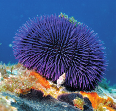
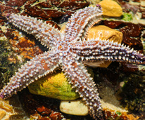
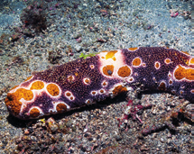
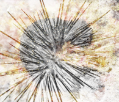
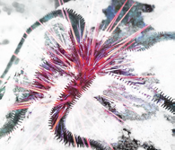
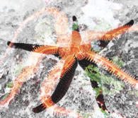
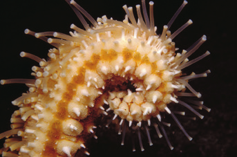

Animales marinos como las estrellas, las holoturias y los erizos de mar son equinodermos. Es el grupo de invertebrados que mejor se distingue del resto.
El cuerpo de los equinodermos
Los equinodermos tienen simetría radial. Bajo la piel disponen de un esqueleto interno formado por placas calcáreas sobre las que pueden desarrollar espinas dérmicas. Pueden tener forma estrellada, cilíndrica o redondeada.

Erizo de mar morado

Estrella de mar sobre rocas
Las funciones vitales de los equinodermos
Respiran por branquias situadas en la piel y por el sistema ambulacral. Las estrellas son carnívoras; las holoturias, detritívoras, y los erizos, herbívoros.
La reproducción es sexual, con los sexos separados, aunque hay especies hermafroditas. La fecundación es externa.
Los órganos sensoriales están poco desarrollados. Algunos disponen de una mancha ocular situada en el extremo de cada brazo, así como de órganos táctiles y olfativos por su superficie.
Clasificación de los equinodermos
Asteroideos
La estrella de mar pertenece a este grupo.
Ofiuroideos
La ofiura tiene forma de estrella de finos brazos.
Equinoideos
El erizo tiene el cuerpo en forma de globo con espinas.
Holoturoideos
La holoturia tiene el cuerpo cilíndrico.

Holoturia colorida

Holoturia

Erizo de mar morado

Estrella de mar naranja

Cerca de una criatura marina